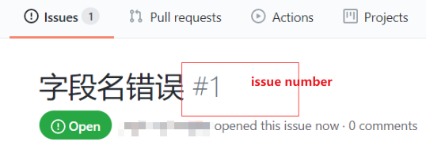

TreeviewCopyright © qgao 2021-* all right reserved, powered by aleen42
git commit提交类型规范
https://blog.csdn.net/qq_41999617/article/details/110581321
1 统一格式
git commit -m 'type(scope): 描述(#issue)'
规范有3点:
- type
- scope
issue
2 type
| type | desc |
|---|---|
| init | 初始化 |
| feat | 新特性 |
| fix | 修改问题 |
| refactor | 代码重构 |
| docs | 文档修改 |
| style | 代码格式修改, 注意不是 css 修改 |
| test | 测试用例修改 |
| build | 构建项目 |
| chore | 其他修改, 比如依赖管理 |
| scope | commit 影响的范围, 比如route, component, utils, build... |
| subject | commit 的概述 |
3 scope
可以为提交类型添加一个围在圆括号内的作用域，以为其提供额外的上下文信息；
4 #issue
就是issues的编号。
5 举例
issue如下： 
解决issue后,进行提交：
git commit -m "fix(helloWorld):修改字段名(#1)"查看github仓库：